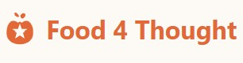

In progress
Food4Thought
July 2026 – present

I am building a web application called "Food4Thought" to help people organize anxious thoughts revolving around food. It provides a private, judgment-free space for individuals dealing with eating disorders, particularly binge eating disorder, to process their thoughts, track patterns, and access support resources.
Food 4 Thought is a mental health tool built with Astro, React, Supabase, and OpenAI/Groq. It combines AI-powered conversation with personal journaling and tracking features.
Kalshi Trading Strategies
May 2026 – present
[Add a short description of this project]
Completed
GARCH Volatility Forecasting & Mean-Reversion Strategy
Texas UCF
- Implemented a GARCH-based volatility-forecasting model, adapted from academic literature, to trigger a mean-reversion trading strategy above a defined volatility threshold.
- Backtested cumulative returns across three tickers (AAPL, RH, QCOM); presented mixed but rigorously evaluated results and strategy rationale to Texas UCF.
Language Classifier for Triggering Eating Disorder Content
August 2025 | GitHub Repo
In my freshman Spring semester, I was diagnosed with an ED which made navigating my first year of college extremely challenging. After stumbling upon an "ED triggering language" dataset on Kaggle, I felt inspired to use this to train a model to classify this type of language with the intent of using it to flag content that we see in different social media platforms.
- Fine-tuned a machine learning DistilBERT transformer model using Hugging Face to classify short text phrases as pro-recovery or pro-anorexia
- Trained and evaluated the model on labeled data, achieving high precision and recall with 87% accuracy on test data
- Tested model performance on new text inputs, achieving 95% accuracy, demonstrating possible applicability for content moderation
Analyzing Mental Health Patterns with Tableau Data Visualization
January 2025 | View Dashboard on Tableau
As my final project for my data science instructor assistant training for Kode With Klossy, I thought it would be fun to visualize mental health data on Tableau.
- Analyzed 10,000+ survey responses across employment status, treatment-seeking behavior, and mental health risk categories to uncover key correlations via Kaggle Datasets
- Built an interactive Tableau dashboard depicting relationships between mental health, sleep, work, and support
- Demonstrated ability to transform raw data into insightful visualizations that could potentially be used in healthcare, HR, or public policy contexts